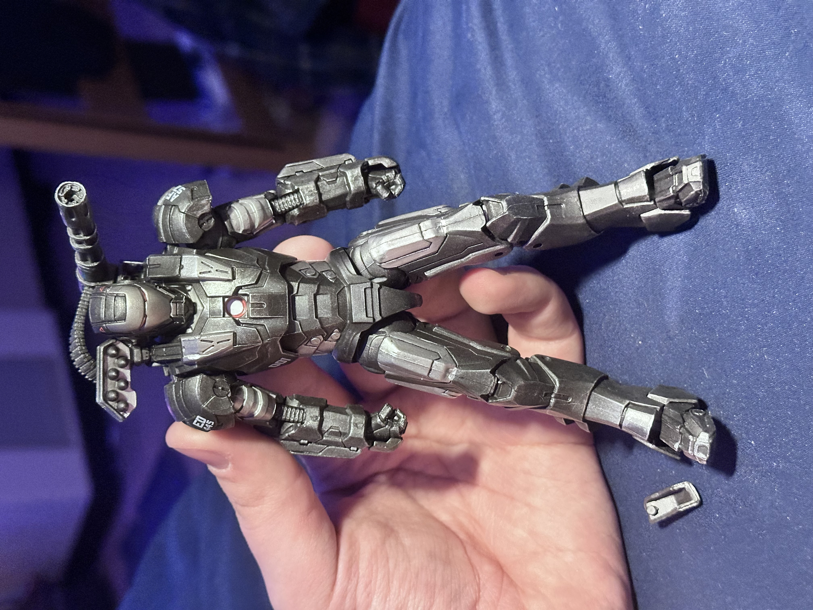
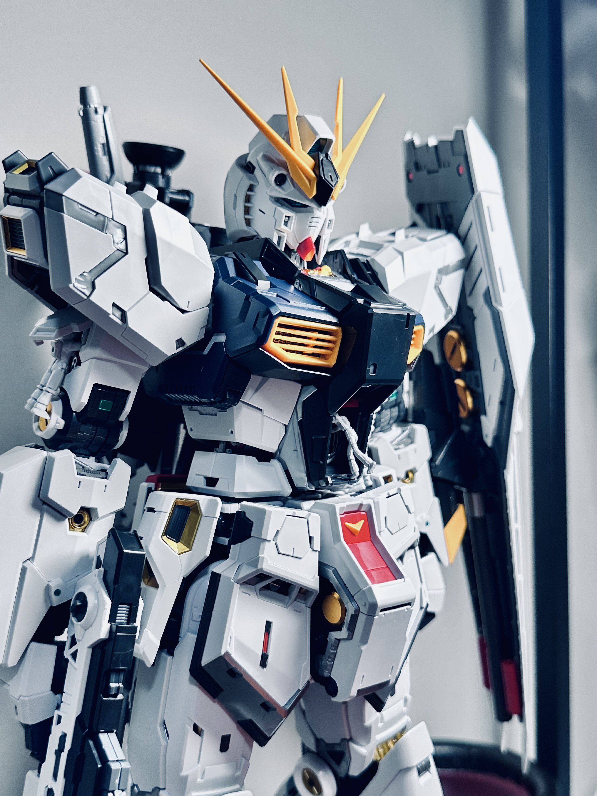
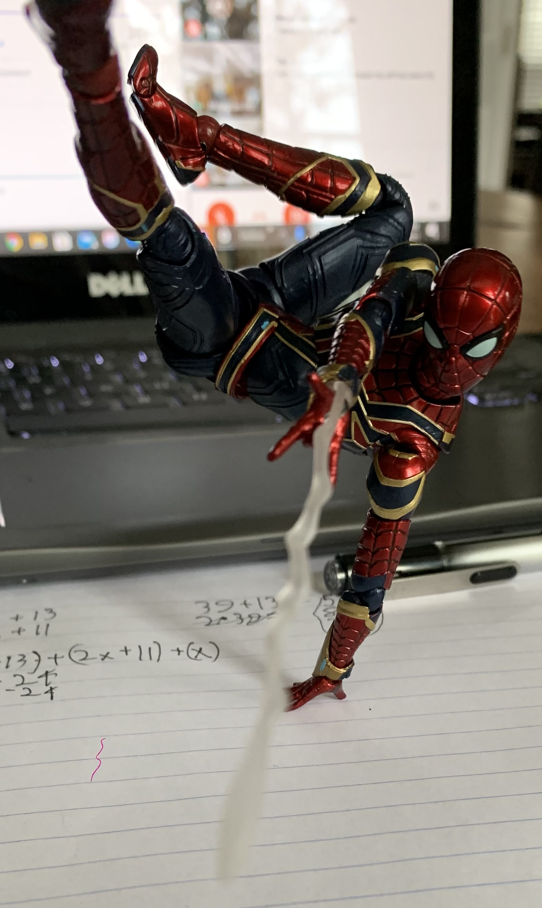
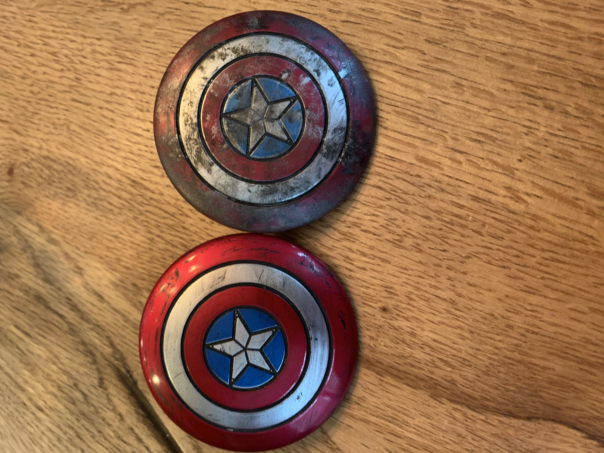

Action Figures

See My Custom CollectionBuilding Model Kits and Customizing Action Figures
Here you can see my completed builds, customs, or even learn how to customize your own figures and how to pose them!
Hi, I'm Alex and I'm an Information Technology Major with a Minor in Anthropology at James Madison University. I started customizing figures when I was 14; I had gotten my first figure, Clone Commander Bly from Star Wars, and I decided he looked a bit boring. I messed around with some of my sister's acrylic paint to make him look dirty and beat up, and I've been hooked on customizing ever since.

See My Custom Collection
Check Out My Builds
Learn How To Pose Your Figures
Pick Up Some Customization Techniques